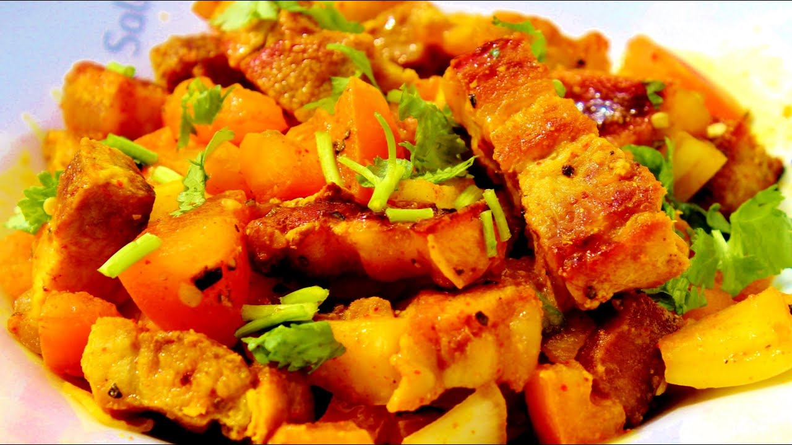
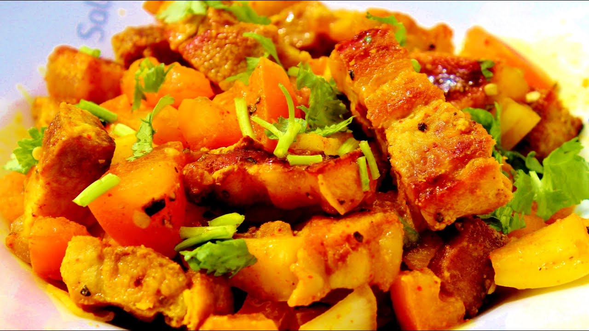

ネパール・タメルにあるモモがおすすめのお店
Nepali restaurant
If you are traveling to Nepal and looking for some authentic Nepali restaurants in Kathmandu, then our blog could help you to find out some of them. Most of travelers loves to taste authentic local foods during their traveling time in that particular destination. It becomes important to taste the authentic and genesis meal along with the warmth of hospitality.


 
